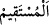

“el-Müstakîm = eşit, denk demektir.” Herhalde terazi dosdoğru olunca tartı
tam olarak yerine getirilmiş olacağı için terâzinin doğru olması emredilmekle
yetinilmiştir. Çünkü terazi tam olduğu zaman genellikle zulüm düşünülemez. Ancak ölçü
öyle değildir. Çünkü çoğu zaman âlet dosdoğru olduğu zaman bile eksik ölçme mümkün
olur. Nitekim âyette ölçüyü tam yapma emriyle yetinilip ölçüyü adâletle yapmak
zikredilmemiştir.
Çünkü
ölçünün
tam
yapılması
ölçünün
adâletle
yapılmasından/düzeltilmesinden önce düşünülemez. Bir başka âyette de ölçü ve tartı
âletlerinin düzgün olması şöyle emredilmiştir: “Ölçü ve tartıyı adâletle yerine
getirin.” (Hûd, 11/85)
“Bu,” ölçü ve tartıyı tam ve eşit olarak yerine getirmeniz sizin için dünyada “hem
daha iyidir” Çünkü bu, muâmelesinde rağbeti ve iyi anılmayı gerektiren bir emânettir
“hem de neticesi bakımından daha güzeldir.”
Bilesin ki kınanan on hasletten dördüncüsü, öfkedir. Bu ise daha önce geçen: “Haklı
bir sebep olmadıkça Allah’ın muhterem kıldığı cana kıymayın.” (el-İsrâ, 17/33)
âyetinde bildirilmektedir. Çünkü öfkenin insanı kaplaması haksız yere ölüme sebebiyet
verir. Allah da bunu: “Bir kimse zulmen öldürülürse, onun velîsine (hakkını alması
için) yetki verdik.” âyetindeki hükümle değiştirmiştir.
Bir hadiste şöyle buyrulur:
“Kıyâmet günü Rahmân’ın arşına en yakın olan kimse, haksız yere öldürülen
mü’mindir. Başı sağ tarafında, katili de sol tarafındadır. Şah damarlarından kan
fışkırır. “Rabbim, buna beni niçin öldürdüğünü sor. Niçin benimle duâlarımın arasına
girdiğini sor.” der. Allah da “Sen helâk oldun!” der ve kâtil cehenneme
götürülür.”[83]
Enuşirvân şöyle demiştir: “Dört şey çirkindir. Onların dört kimsede bulunması ise
daha çirkindir.
Devlet başkanlarında cimrilik,
Hâkimlerde yalan,
Âlimlerde hiddet,
Kadınlarda hayâsızlık.”
“Hilim/yumuşak huyluluk, bütün âfetlerin perdesidir.” denilmiştir.
Kınanan on hasletten beşincisi israftır. Çünkü her şeyde aşırılık israfı doğurur. Allah
da onu îtidâl ile değiştirir. “Ancak bu velî de kısasta ileri gitmesin. Zâten (kendisine
bu yetki verilmekle) o, alacağını almıştır.” (İsrâ, 17/33) âyeti de bunu ifâde
etmektedir.
Abdullah b. Ömer’den rivâyet edildiğine göre bir gün Rasûlullah (s.a.) Sa‘d’ın
yanına uğradı. Sa‘d abdest alıyordu. Rasûlullah (s.a.): “Ey Sa’d! Bu israf niye?” dedi.
Sa‘d ise: “Abdestte israf olur mu?” diye cevap verdi. Hz. Peygamber (a.s.): “Evet,
akan bir nehir kenarında da olsan olur.” buyurdu.[84]
Kınanan on hasletten altıncısı hırstır. Bu da şu âyette geçer. “Yetîmin malına